Kernel-ERP — iDempiere-faithful Browser ERP — User Guide¶
The browser kernel renders the full iDempiere Application Dictionary from SQLite — no Java, no server, no install. This guide walks from first load to POS sale to financial report.
New here? Start at the BIM OOTB User Guide for the full picture.
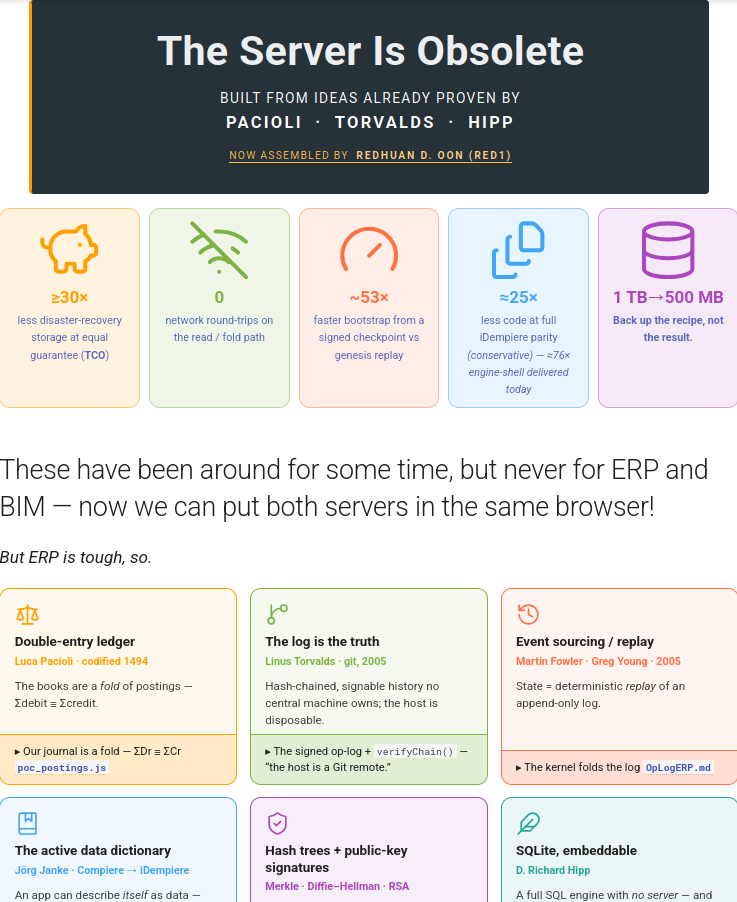
Where to read the full concept: the landing page links to Migrate & Compare (ERP) — start with the six pillars (double-entry ledger · log-is-truth · event-sourcing · active dictionary · hash-trees · SQLite embeddable), then the Roadmap section for POS and warehouse-walk. The paper is the architectural rationale; this guide is the operating manual.
Quick start — the bubbles front door¶
The ERP opens at erp.html — the bubble launcher (from the Matrix front door pick the ERP door). It is not a form yet: it's a slowly-rotating constellation where each bubble is an Application-Dictionary entity — Business Partners, Products, Orders, Warehouses, and the rest — rendered live from the seed.
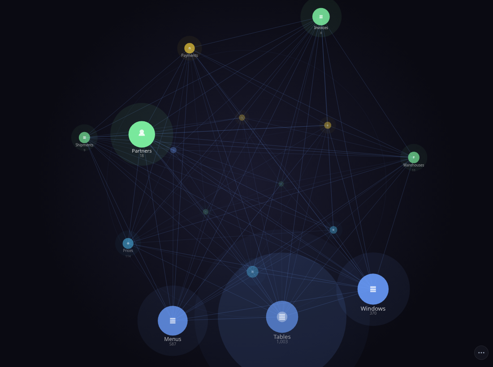
How you move through it (verified in ad_graph.js):
| Gesture on a bubble | What happens |
|---|---|
| Drag empty space | Orbit the constellation |
| Tap a table bubble | Flies in and dives into that entity's records — still inside the globe |
| Tap a record bubble | Expands it / fans out its related records |
| Long-press (~½ s) a bubble | Opens that window (or record) in the real iDempiere renderer — idempiere.html → the login card |
| Double-tap a bubble | Shortcut: opens all records of that table in iDempiere |
So a long-press (or double-tap) is the bridge from the playful launcher into the faithful iDempiere window described in the rest of this guide. A bubble with no iDempiere window just reports that honestly.
The ⋯ rail (bottom-right three-dots — the only non-iDempiere chrome) reveals the two concept
lenses over the same engine:
- Glass (
glassbowl.html) — the engine-as-data "glass bowl" lens. - Gravity (
glassbowl_gravity.html) — a central-mass / orbiting-satellites view.
Both are marked CONCEPT and run fully offline.
Skip straight to the forms: if you just want the classic ERP, open idempiere.html directly (or long-press any bubble). A login card appears immediately — no credentials, just pick a role.
Initial Tenant Setup — born a new client (LIVE)¶
This is iDempiere's Initial Client Setup, on our engine. Open genesis.html, give the new tenant a name, a currency, and an admin user — three inputs — then press ⚡ Birth tenant.
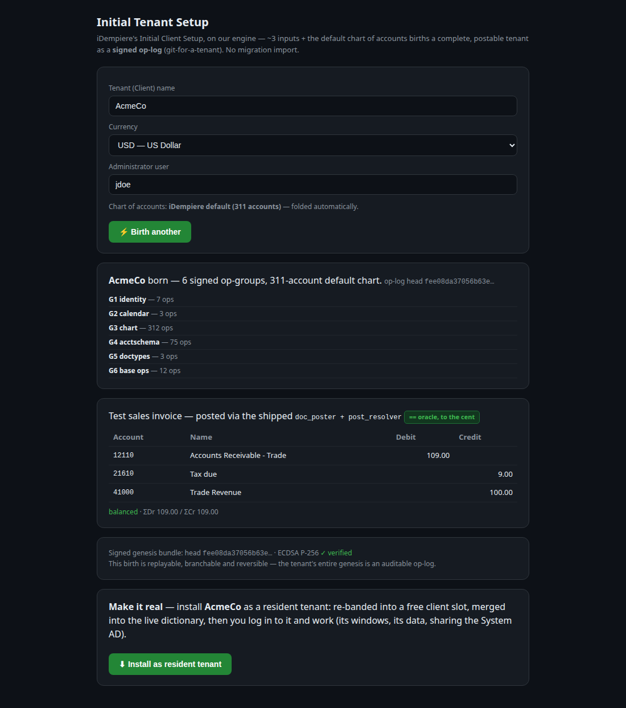
What you get, instantly:
- A complete, postable tenant expressed as a signed op-log (git-for-a-tenant) — 6 op-groups (identity, calendar, the full 311-account default chart, acctschema + default-account wiring, doctypes, base masters). No migration import.
- Proof before it's permanent — a test sales invoice is posted through the same shipped
doc_poster+post_resolververbs the live Posting-Preview uses, and the journal matches the iDempiere oracle to the cent (DR 12110 Receivable / CR 41000 Revenue / CR 21610 Tax-due, balanced). - The whole birth is replayable, branchable, reversible — and ECDSA-signed.
Press ⬇ Install as resident tenant to make it real: the tenant is re-banded into a free client slot, merged into the live dictionary (sharing the System AD), its admin role granted the standard windows, and persisted. You're dropped at the login switcher — the new tenant is now listed and you log in to it and work (its windows, its data). It survives a reload.
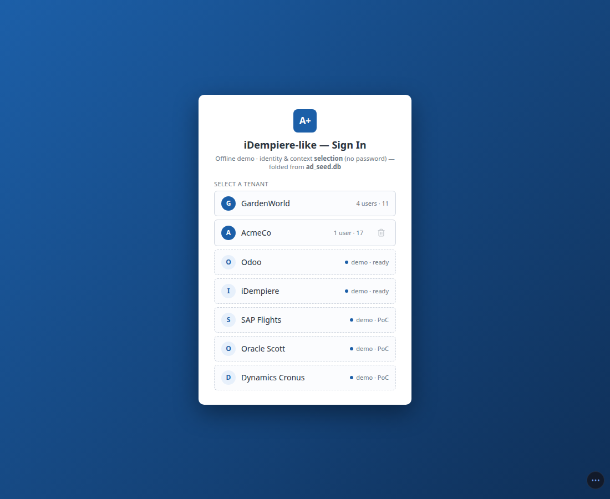
1. Login¶
The login card lists all AD roles in the seed. Pick one and tap it:
| Role | Use |
|---|---|
| GardenUser | The default demo persona — access to Sales, Purchasing, Inventory, POS |
| Admin (GardenAdmin) | Full menu (294 / 332 windows); sees all process / form leaves |
| WebService | 0 windows — confirms the access-gate works (empty menu is correct) |
The menu is pruned immediately by real AD_Window_Access / AD_Process_Access grants from the seed —
if a window is absent for your role, that is correct, not a bug.
2. Bring your data in — the DIY box (Help → Run it yourself)¶
Migration is delegate-to-install: the browser never connects to your database. The Help pill opens one About / Run it yourself (DIY) box. On the DIY tab you pick your source ERP → download its self-contained agent zip → run the commands its README gives you, in your own terminal → load the one file it writes back here. Your credentials never leave your machine; every value is a recorded row (nothing is faked). The README is the single "what to run" — you copy-paste from it, not from the UI.
| Source | Agent (extract YOUR data) | Resident demo tenant (login front door) |
|---|---|---|
| Odoo | odoo_agent.zip → cd odoo_agent && npm install && node agent.js → writes odoo_chain.json (the browser re-folds + verifies it) |
Client 12 — the full migrated Odoo catalog (38 partners · 35 products · 27 sale orders, 12-odoo.db), books diffed to the cent |
| iDempiere | idempiere_agent.zip → cd idempiere_agent && npm install && node migrate_agent.js --masters → writes ad_masters.db |
Client 13 — real PG-agent extraction, PKs re-banded |
| SAP | on the roadmap (greyed "under construction") | Client 14 "SAP Flights" — PoC: the documented SFLIGHT flight-booking reference model (carriers → Business Partners, connections → Products) |
| Oracle | on the roadmap | Client 15 "Oracle Scott" — PoC: the canonical EMP/DEPT (SCOTT) schema (departments → BP Groups, employees → Business Partners) |
| MS Dynamics | on the roadmap | Client 16 "Dynamics Cronus" — PoC: the Business Central CRONUS demo company (items → Products, customers → Business Partners) |
Point an agent at your own server with environment variables (defaults shown — every value is real):
- Odoo —
ODOO_HOST=localhost ODOO_PORT=8069 ODOO_DB=odoodemo ODOO_LOGIN=admin ODOO_PASSWORD=admin ODOO_SO=S00023 node agent.js - iDempiere —
ERP_PG_CONTAINER=postgres ERP_PG_DB=idempiere ERP_PG_USER=adempiere ERP_PG_SCHEMA=adempiere node migrate_agent.js --masters(also--list-clientsto enumerate tenants,ERP_OUT=…for the output path)
The three PoC tenants carry each vendor's documented public demo model — reference data labeled as
such, proving the master-table mapping; a delegate agent (like Odoo's) is the production path for real
extractions. The DIY box also self-hosts the whole app: one install script downloads BIM OOTB and
serves the landing on localhost:8080 — BIM and ERP, your domain, your branding.
What a resident tenant leaves behind: it is merged into the seed in browser IndexedDB — it survives a plain reload, re-install is a guarded no-op, and the install appears as a dot on the W world-history timeline.
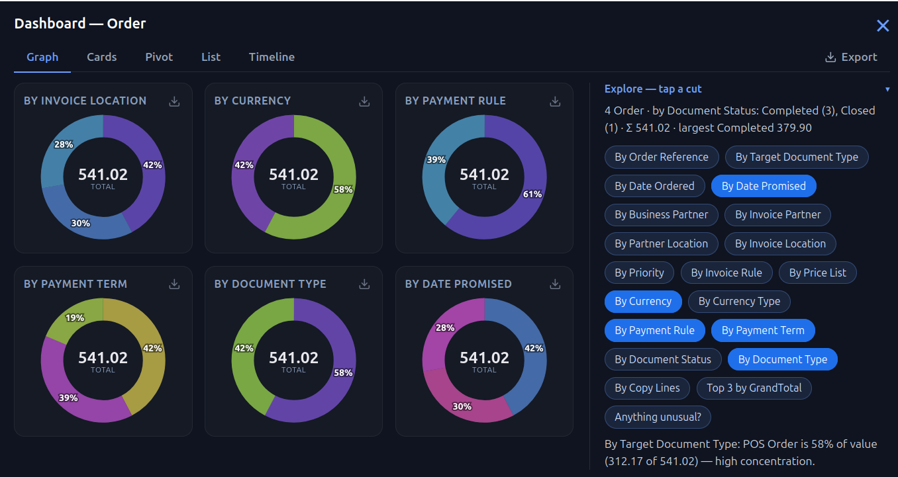
Reading the Dashboard. The Dashboard pill (on the ⋯ rail) opens the current window's records as one surface with five tabs — Graph · Cards · Pivot · List · Timeline — all folding the same live records:
- Graph is a grid of donuts, one per dimension (status, partner, location, date…) — the % sits on the arc, the centre shows the total. Long-press to drill to the records behind any segment: one record opens its form, several narrow the window grid with a Show all to step back. A plain tap/hover only previews; double-tap a donut to flip it to a plain table. The same long-press drills from any tab — a List row, a Timeline or Cards tile, or a Pivot cell.
- The Explore panel on the right lists every dimension as a chip. The chips already drawn on the left are highlighted — tap a lit one to remove its chart, tap any other to add one. Top 3 and Anything unusual? answer in a sentence.
- Pivot cross-tabs any two dimensions by a measure (count / amount / qty); foreign-key columns read their real names (e.g. Manufacturing Order, Business Partner) and a cell lists its records.
- List is the grid distilled; Timeline scrubs the records along their dates (a date-less window such as Business Partner falls back to Created / Updated).
- Export (top-right, plus the ⤓ on each donut) writes the real folds out as CSV, or a donut as SVG / PNG — nothing invented, just the numbers on screen.
A window with few, uniform records — say three demo Projects all of one type — honestly shows near-single donuts: there is simply no spread to chart. The same window on a real tenant fans into full segments.
Forecast — reading the future. The Forecast toggle at the top-right of the Dashboard projects a run-rate future onto the two time-axis tabs and leaves the others untouched (a donut or a kanban has no future tense). On Graph a cumulative S-curve card shows the running total to date — a real fold; switch Forecast on and a dashed-blue tail extends it past a now marker, the average of the recent run-rate, drawn dashed so it is never mistaken for an actual. Timeline gains the same — dashed projected columns past a now divider that the slider scrubs into. On a Project window the S-curve reads as a variance curve instead: the planned baseline (the contract) against the committed outturn, with the Δ (e.g. the Hospital plan, planned 64.7M → committed 87.4M, +35%). Every dashed point is a labelled extrapolation of the real folds — nothing invented; the committed baseline is extracted, not modelled. (The interactive schedule what-if — dragging a phase to slip and folding the ripple on a reversible blue branch — lives on the 4D Time Machine, not the Dashboard.)
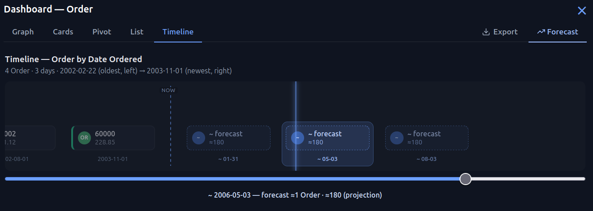
Two more reads sit on the same tabs. On Pivot, each cell is shaded by its size — darker = higher — so the busy spots stand out without reading every number. On Graph, a Web button folds the pies you have on the board into one radar: each pie becomes a spoke, reaching out by how lopsided it is (its biggest slice's share). A spiky web flags a cut dominated by one value; a round web means it is evenly spread — a fast way to see which cut is worth a look, then tap Pies to flip back and drill. Because it reads the live pies, adding or removing a cut with the Explore chips reshapes the web.
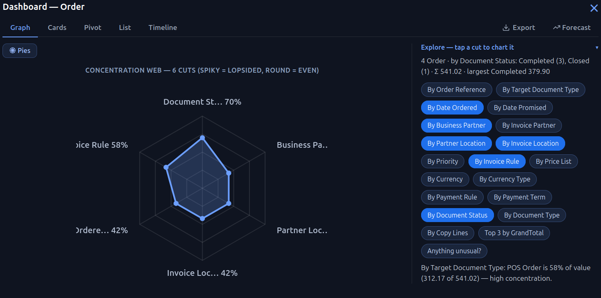
Choosing a tenant at login — the front door: the login card opens on a five-tenant front door.
Even on a cold seed it lists GardenWorld plus five migrated demo tenants (Odoo · iDempiere · SAP ·
Oracle · Dynamics), each tagged demo · ready or demo · PoC (the login step unions the resident
tenants with the demo manifest). Picking a demo tenant lazy-installs its shard on the spot — no
dialog, no ?shard=, no server (P0, erp sw v692). Once installed it survives a reload and joins the
resident list (System, GardenWorld, and every installed tenant). Each tenant is entered through its
own Admin user (e.g. SAP Flights Admin); the System user belongs to the System(0) client only.
(In-tenant test links that skip the picker enter via ?client=garden.)
Spatial BIM → ERP — Find a selection → Project Order (LIVE)¶
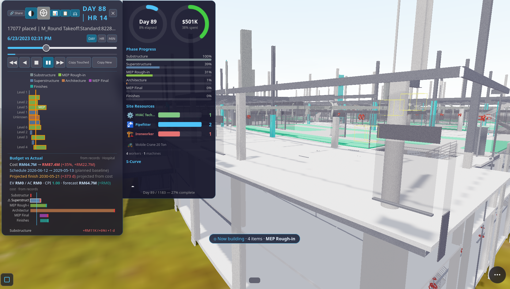
The BIM viewer can fold a priced building selection straight into a real iDempiere C_Project
tree — phases, tasks, and priced lines — that this ERP then reads in its standard Project windows. The
whole building, or any slice you select, becomes work to be done.
How. In the viewer's Find panel select a scope (whole building, a storey, a discipline, or a
type). The selected bar shows its indicative 5D cost in the active rate pack. Tap › ERP to push
it. The fold (proj_fold.js):
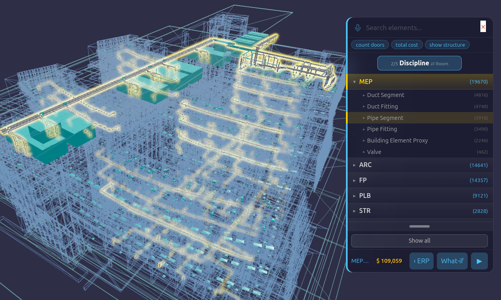
| What you selected | becomes |
|---|---|
| whole building | a C_Project (header, span, planned amount) |
| storey / discipline | a C_ProjectPhase (name + SeqNo + dates from the 4D rules) |
| type | a C_ProjectLine (qty × rate, find-or-creating its M_Product) |
| category | the M_Product_Category grouping those lines |
Phases, sequence, and dates come from sequence_rules.json (the same 4D rules the Time Machine plays);
price from the active 5D rate pack; quantity from the model's QTO. Nothing is invented — amounts
fold via BigDecimal. A Purchase Order is generated only if the phase carries a supplier; otherwise
it stays a plan-only project (the non-invent gate). The push is idempotent (a second push adds zero
rows) and persists to the same browser origin as this ERP, so the folded project appears in the standard
C_Project / C_Order windows on the next boot — round-trip complete.
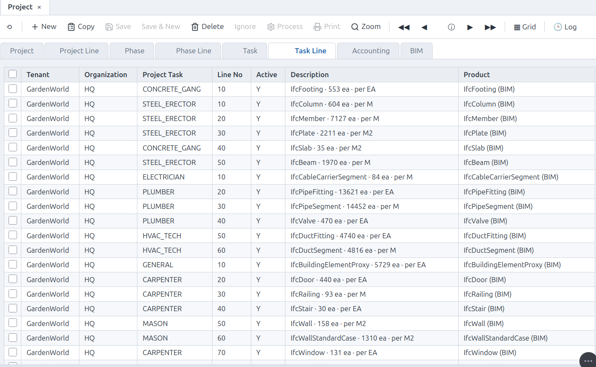
Witnessed on the Duplex: 6 phases · 9 tasks · 16 lines, PlannedAmt folding to the 5D golden to
the cent (§PROJ_FOLD plannedAmt==golden), every phase SeqNo tracing to sequence_rules.json
(shipped bim-ootb PR #316). See the BIM → Project blueprint.
A sibling
› VObutton (in the model-diff panel) folds a model revision into a signedC_Ordervariation amendment against the same project.
Author the 4D/5D schedule — build it up from the model (LIVE)¶
The Time Machine is not only for playback — it is where you author the construction schedule and its cost, building the 4D/5D up from a bare model. There is no separate scheduling tool and no re-linking step: every edit is written straight into the IFC-native schedule tables the viewer already reads, so the visual gesture and the system-of-record are the same signed rows.
Where the button is — in the viewer:
- Open a building and the Time Machine (the clock pill, or press
t). - On the panel, press
✎(Author 4D Schedule) — the authoring wizard opens.
What you do:
- Generate first draft — folds the model's elements into organized phases (a WBS): Substructure, Superstructure, MEP, Architecture, Finishes — grouped by the same trade rules the Time Machine plays. Every element is assigned to a phase, contiguous dates are laid out, and the 5D cost folds per phase.
- Craft it up — rename a phase, expand it to list its elements (click one to light it in 3D), and reassign an element to a different phase from its dropdown. Because the cost folds from the assignments, moving an element moves its cost between phases — the WBS you author organizes the 5D.
- Tune the dates — the
−5d/+5dsteppers and the Start date lay the phases out; on the gantt you can also drag a bar directly (the shipped drag-to-slip). - Apply to 4D ▶ — re-folds the Time Machine so the gantt and the playback show your schedule.
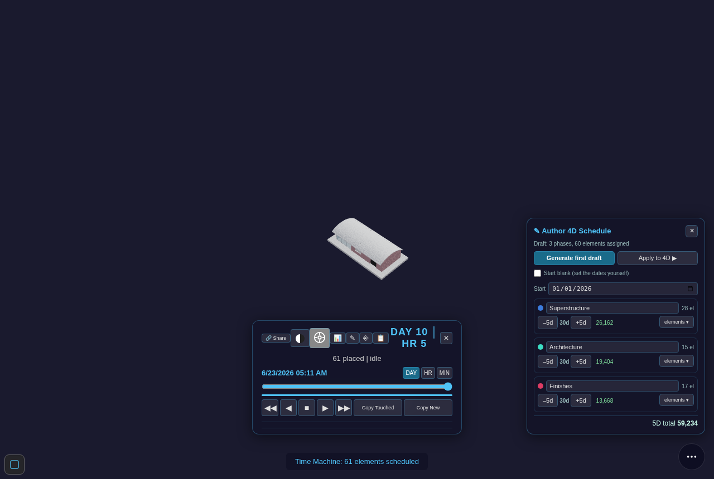
Start from nothing. Tick Start blank (set the dates yourself) and the wizard organizes the phases
and assignments but leaves them undated — nothing shows on the timeline until you set a Start and
press Schedule now ▶ to originate the dates yourself. The auto-draft is a suggested start, never
the only path: you can accept it and finish fast, or build the schedule up by hand.
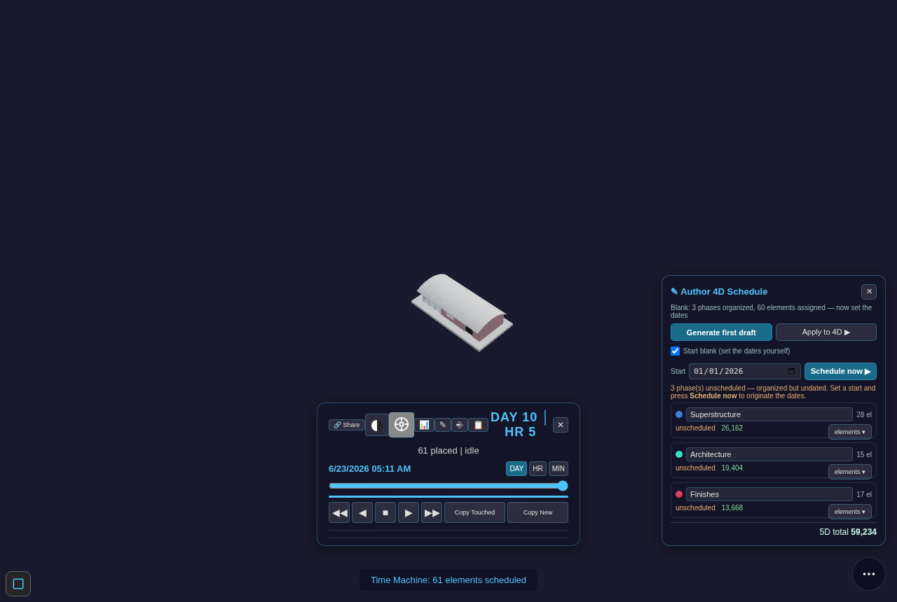
The link between an element and its phase is identity by construction — it survives renaming the phase
or the element, where name-matching schedulers would re-bind or break. (Engine proven by W-AUTHOR-4D-BLANK
16/16, the 5D fold by W-AUTHOR-5D-COST 10/10, the blank start by W-AUTHOR-BLANK-START 11/11, all on the
real SampleHouse through the shipped read-path; viewer/schedule_author.js + schedule_author_ui.js.)
Zoom-Across knows where the Time Machine is. When the Time Machine is open and you pinpoint an element (from Find, or a Zoom-Across from a record in the ERP), the timeline jumps to that element's construction moment instead of only lighting it in 3D — the Time Machine consumes the pinpoint. With the Time Machine closed, the pinpoint goes to Find as before (cost/location first).
What-if schedule — slip a phase, watch the chain re-fold (LIVE)¶
Once a building is folded into a project, you can ask "what if this phase slips?" without touching the real plan.
Where the button is — on the Time Machine (the same hub that owns the 4D/5D):
- Open a building and the Time Machine (the clock pill, or press
t). - Press
⑂(What-if) on the panel.
It works out of the box — you do not even have to push a project first: with no project of your own yet, the
panel opens on the built-in Hospital project (the 7-phase chain below). Push one from the viewer's
Find panel with › ERP and it opens on that one instead.
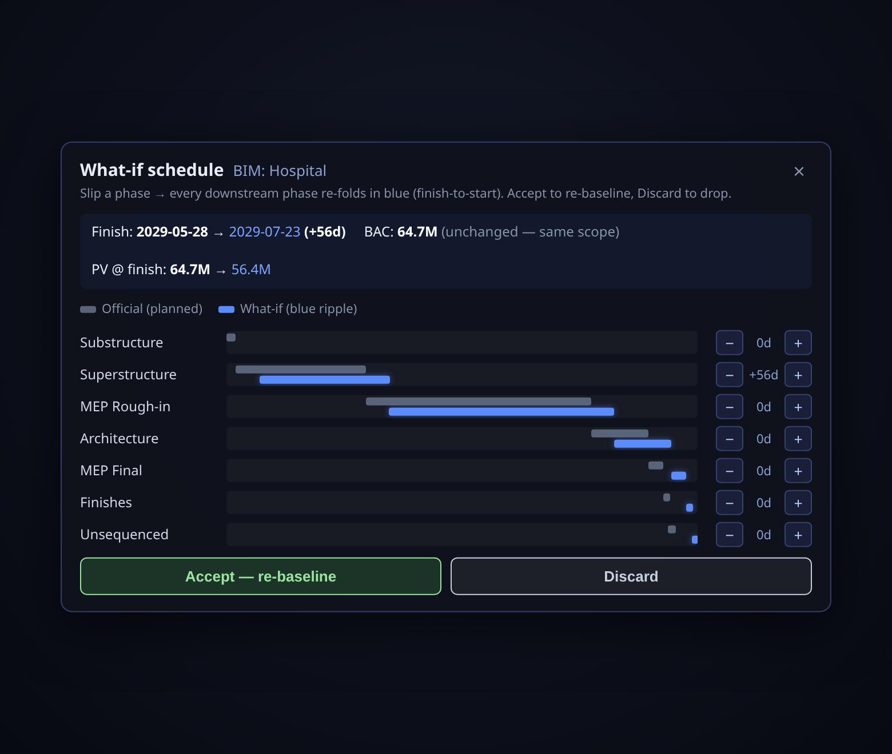
The project's phases are a finish-to-start chain — each phase starts when the one before it finishes
(that is exactly how the fold laid them out). So when you slip one phase with the − / + steppers,
every downstream phase re-folds with it, in blue, beside the grey official plan:
- Grey bars = the official planned schedule (untouched).
- Blue bars = the what-if — the rippled schedule. Upstream phases (before your slip) stay put; the slipped phase and everything after it shift together.
- The header reads the impact straight off the fold: the new finish date (and the day slip), and how planned value (PV) moves. The budget (BAC) never changes — a slip moves dates, not scope.
Then decide:
- Accept — re-baseline writes the rippled dates back onto the project as the new official plan (and saves it), so the schedule now reflects the slip.
- Discard drops the what-if entirely — the official plan was never touched.
This is the Blue Future
branch model applied to the schedule: the what-if lives on a speculative blue branch over the same signed
op-log, so it is real (not a mock) yet completely reversible until you accept it. The same engine that
unifies a planner, a cost tool, and a 4D/5D viewer onto one log gives you free what-if — no separate
scheduling tool, no drift. (Engine proven by W-WHATIF 13/13 on the Hospital project; viewer/whatif.js.)
Schedule Editor — the advanced Gantt, on its own surface (LIVE)¶
The Time Machine's ✎ wizard and ⑂ what-if are the intuitive front — quick, visual, one
gesture. When you want the serious planner — an expandable WBS, real dependencies, a critical path,
and a draggable Gantt — press ↗ Editor on the Time Machine (right beside ✎ Author and ⑂ What-if) to
open the Schedule Editor in its own tab, loaded on the same model. (You can also open it directly at
viewer/schedule_editor.html?db=….) It is a separate, focused surface so the front visual stays light;
both edit the same IFC-native schedule tables, so nothing forks.
![The Schedule Editor on a real SampleHouse — left: the **WBS outline** (Project → Superstructure · Architecture · Finishes, each with its element count and dates); right: the **dependencies** (a finish-to-start chain you author and retype); bottom: the **interactive Gantt**. **Compute CPM** has run — the critical path is red on the rail, in the dependency links, and along the timeline bars, and the header reads *project 90d · critical 3/3*. Drag a bar to reschedule; drag its ▸ handle onto another bar to link.](../figs/sched_editor_gantt.png)
What it does, and how it earns each step:
- Expandable WBS outline — the phases you authored render as a collapsible tree, each leaf showing its element count and dates.
- View & edit dependencies — add a link between two phases, choose its type (FS / SS / FF / SF),
set a lag, or delete it. The graph is written to the IFC-native
task_sequencestable; a link that would create a cycle is refused (a schedule cannot loop). - Compute CPM — a real critical-path forward/backward pass over the dependency graph computes each task's early/late dates, total & free float, and which tasks are critical. The critical path lights up red across the outline, the links, and the bars; the readout shows the project duration and how many tasks are critical. (Editing the graph after a run clears the result until you recompute, so a stale critical path is never shown.)
- Interactive Gantt — drag a bar to reschedule it (snapped to whole days, duration preserved); drag the ▸ handle from one bar onto another to link them. This is the MS-Project gesture, on your signed schedule.
Live across tabs. Every edit is a signed op broadcast on one channel, so a second open surface
re-folds it live — drag a bar in the editor and a Time Machine (or a second editor) open on the same
model updates immediately, because both are folds of the same log. This is the difference from the
field: open-source 4D (Bonsai) can build a schedule and run CPM but its Gantt is a generated picture you
edit through side panels; MS Project gives you the interactive Gantt but has no model, no cost, and no
ERP. The Schedule Editor is a real drag-on-the-chart editor on one signed op-log that the model, the
4D playback, the 5D cost, and the ERP all fold from — so a date you drag here is the same fact the
enterprise reads. (Proven by W-SCHED-EDIT 19/19, W-SCHED-CPM 10/10, W-SCHED-MOVE 7/7, and
W-SCHED-SYNC 11/11, plus headless drag/sync smokes; viewer/schedule_author.js + schedule_sync.js.)
Where it stops — on purpose. The editor computes from the graph you author; it never auto-reschedules or "levels" resources for you. Automatic schedule optimisation is a decades-deep rabbit hole and a place for drift; the line here is deliberate — deterministic compute, your plan.
Import a Primavera / MS Project programme — adopt an existing plan (LIVE: P6)¶
You don't have to author from scratch. If the schedule already lives in Primavera P6 or MS
Project, bring it in: in the Schedule Editor press ⤓ Import P6, pick the export file, and its
WBS, dependencies and dates land straight into the same IFC-native tables the rest of the 4D/5D
stack reads. The imported plan immediately gets the expandable WBS, the FS/SS/FF/SF dependency
editor, Compute CPM, the drag-Gantt, What-if and the 5D cost fold — nothing special-cased.
How the two worlds meet. The 3D model comes from Autodesk (Revit/Navisworks → IFC → the BIM Viewer). The programme comes from Primavera / MS Project. The importer is a thin reader that turns either side's export into our one signed schedule — and the two are stitched together by binding:
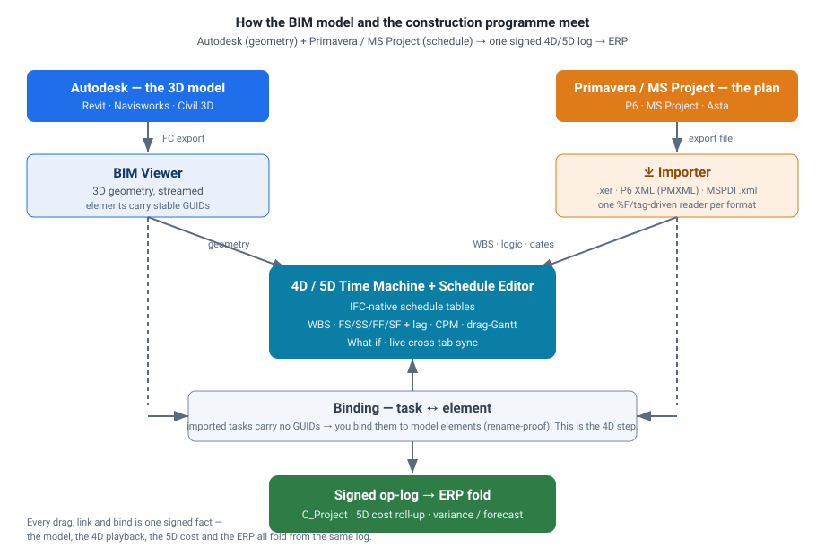
The formats — each is a separate reader behind one mapper, so the result is identical whichever you feed in:
| Source | File | Status |
|---|---|---|
| Primavera P6 | .xer (the interchange planners email around) |
LIVE |
| Primavera P6 | .xml — P6 XML / PMXML (the open, structured export) |
LIVE |
| MS Project | .xml — MSPDI (Project's XML export) |
LIVE |
(Both .xml flavours are auto-detected by content — you don't pick the format, just the file.)
The honest boundary — why import isn't yet 4D. A P6 or MS Project file carries the plan (tasks,
logic, dates) but no model geometry — it has activity codes, not your building's element GUIDs. So a
freshly imported schedule is a real, editable, CPM-computable programme, but its tasks aren't yet tied to
anything you can see. You make it 4D by binding: in the ✎ wizard you assign each task the
elements it builds (rename-proof — the link survives a model re-export). Once bound, the 5D cost folds up
from the assigned elements and the Time Machine scrubs the model along your imported dates. This binding
step is exactly the thing a P6 reporting tool cannot do — it has no model to bind to.
Demo files. The same ready GW-Hospital programme ships in all three formats —
tests/fixtures/Hospital_GW_Programme.xer(P6 XER),…/Hospital_GW_Programme.xml(P6 PMXML) and…/Hospital_GW_MSProject.xml(MS Project MSPDI) — so you can try the import end-to-end on the sample model. (Proven byW-FGN28/28 on the real Hospital model — every format maps to the same rows, CPM reproduces the plan's 300-day critical path exactly, and 525 real elements bind and fold to 5D cost; plus the§SE-IMPORT-SMOKE7/7 headless UI check.)
3. The Bottom Pill Bar (cheat sheet)¶
The pill is the single entry point for every tool. Left-to-right:
| Icon | Pill ID | What it opens |
|---|---|---|
| ⌂ | home |
Top-level AD menu (window list, role-pruned) |
| ⊙ | toggle / settings |
Settings panel (language, theme) |
| 🔍 | search (red circle) |
Record find / filter across the current window |
| 🔴 (ring) | redpill |
"Just the pill" ⟷ classic iDempiere look — master toggle (key ,) |
| 🔌 | plugin |
Plugin Engine — Install (PackIn) / Create (PackOut) your own models (§9) |
| W | history |
World history overlay — scrub the op-log timeline (‹ dots ›) |
| ❔ | showme |
Help — opens the shared About / Run it yourself (DIY) box (§2): the project at a glance + self-host + bring-your-data-in agents |
| ⋯ | more |
About · Tour · Read/Compare paper · help badges |
Tip: long-press the W pill to open the Z+bomb drawer (undo / fold-back to a past state). Long-press a history dot inside the W overlay to fork a Blue Future speculative branch — the built-in pre-release test harness (§15).
4. Navigating Windows¶
- Tap ⌂ — the menu tree opens (role-pruned).
- Browse by category (Sales, Purchasing, Inventory, …) or use the search leaf.
- Tap a window — the record list loads from the seed db.
- Tap a record row — the detail form opens with all AD tabs.
- Breadcrumb at the top shows
Window › Record. Tap any crumb to go back.
Keyboard shortcuts (desktop):
| Key | Action |
|---|---|
← / → |
Step back / forward in the history bar |
? |
Toggle help badges (ShowMe mode) |
5. Forms, Tabs, and Fields¶
- DisplayLogic is live: fields hide/show based on real
AD_Field.DisplayLogicexpressions (27 of 60 Sales-Order fields hidden by the evaluator —ad_evaluator.js). - DocAction bar: when a document is open the action chips at the top are the legal next actions
for its current DocStatus, derived from
ad_docfsm.js. Completed orders show Close / Void — never ReActivate unless the DocType allows it. - Editable fields: tap a field to edit. Changes are staged in a CRUD overlay. Hit Save to commit as a signed sidecar op.
6. The Process Button¶
When a menu leaf or a form has a ▶ Process button (type P/R in the menu), tapping it:
- The
ad_process.jsdispatch spine resolvesAD_Process.classname→ a registered handler. - If the process has
AD_Process_Pararows, a parameter dialog appears first — fields are validated (§PROC_PARAM_VALIDATE) before the handler fires. - The handler returns an op-group;
kernel_ops.commitGroupwrites it as a signed op to IDB. - The form re-reads and shows the updated status.
Does the record persist? Yes — every committed op is written to IDB as a signed op-log entry. The op-log is append-only: every change has a timestamp, a hash chain, and a reversible trail. No traditional row-update happens; the current state is the fold of all ops on that record.
Unregistered classnames show an honest "absent handler" card (the 333-falsifier) — 454 of the
476 SvrProcess handlers are named-deferred; the 5 registered ones cover the demo flows.
7. POS — Point of Sale¶
Prerequisite: log in as GardenUser (the POS station c_pos_id=1 is scoped to that role).
Tap the POS pill in the bottom bar (it appears only when the loaded db has a c_pos station).
POS screen layout (the killer-demo surface, sw v656 → panel lifecycle v658–v660)¶
- Album cards — the product grid is a photo album (
.pos-card,§POS-ALBUM cards=16): each card fromc_poskey → m_product(the sealed keylayout) shows its photo (full-res from the device images folder → ledger thumbnail → placeholder glyph, honestly tiered) and its master price from the station's pricelist — you ring the master, not a manual price. - Floating payment panel — the cart pill summons a floating panel on its own layer
(
#pos-float-panel); tap the cart pill again to dismiss it (§POS-FLOAT toggle=). The album keeps scrolling underneath; payment never squeezes the grid. - Panel lifecycle — swipe-down to dismiss, and it follows the cart: when the cart empties
— sale completed, or the last line removed — the panel dismisses itself (
§POS-FLOAT dispose=cart-empty). The cart pill re-summons it anytime. Dismissing is pure UI: it never touches the cart contents or a committed sale (the sale is sealed atomically at Complete, before the panel ever moves).
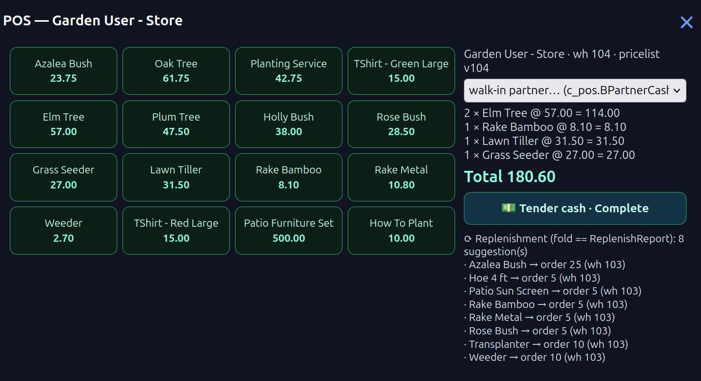
Payment panel layout (sw v680 — top-bar total + single Pay)¶
The panel is a draggable float (#pos-float-panel), stripped to the essentials:
- Top bar — the running total. The top row shows the live cart total (
#pos-top-total), updating as you ring items. The cart icon stays on the left (tap it to summon/dismiss the panel,§POS-FLOAT toggle=); the scan-QR button sits on the right (#pos-pill-scan— opens the barcode overlay to add an item). - One Pay icon. A single Pay icon (
#pos-float-tender, right) completes the sale directly — there is no pre-completion preview modal (the earlier orange/green rim drawers + receipt-preview modal are retired). The walk-in partner is defaulted (the Standard business partner, else first active —§POS-PARTNER-DEFAULT), so Pay works out of the box. - Draggable. Grab the panel header to reposition it (
§POS-FLOAT-DRAG moved=Y); the album keeps scrolling underneath, payment never squeezes the grid. - ⋯ dock (bottom-right, reveal-up, taps-outside close it) — the secondary actions live here:
home, import (register a product — the
(+)glyph), receipt (re-open the last receipt, appears after a sale), and Deliver later (the WH-walkrouteglyph; dictionary-gated — present only when the loaded db has anSOdoctype — opens the warehouse walk in a new tab).
Making a sale¶
- Tap a product card (or scan from the top bar) → it is added to the cart at the sealed price.
- Tap again to increment qty, or edit qty in the line.
- Review the running total in the top bar (BigDecimal fold of line amounts, never a posted figure yet).
- Tap Pay (
#pos-float-tender) → the sale completes directly into one signed op-group (§POS-SALE … newVerbs=[] chainOk=Y— the receipt showssigned=Y). No partner prompt — the Standard partner is used unless you pick another. - The receipt opens in its own overlay (re-openable via the receipt entry in the ⋯ dock) and the payment panel dismisses itself — the sale is already closed: one signed op-group, nothing left pending.
Audio earcons
Subtle earcons sound on key POS actions — ring an item, Pay, sale-complete (§POS-AUDIO) — via the
shared synth engine reading sfx.json (data rows, ui_clicks:false so there is no per-button
spam). They no-op silently if the sound engine is absent.
Barcode scan distance
The scan overlay shows the hint "Hold steady · 10–15 cm from barcode" on open. Barcode scanning works best at 10–15 cm from the label. Some Android phones apply macro focus automatically (Chrome-only; Safari degrades silently — typed fallback always works).
Register a new product at the till — the Import pill (§P-9)¶
The Import pill opens the snap+scan+price flow: photograph the item (camera, downscaled to a
≤32KB ledger thumbnail; the full-res photo goes to the device images folder under a
sha256: content address — §POS-IMGKEY), scan or type its barcode, key the price. Register
commits ONE signed group of 4 CRUD_CREATE ops — M_Product, M_ProductPrice (station pricelist),
AD_Image, C_POSKey — every default EXTRACTED from the dictionary and the station's own rows
(§POS-IMPORT registered productId=… gid=…). The new card appears in the album and rings
immediately through the unchanged sale path. A duplicate barcode is refused and the existing
product handed back (propose-merge). Editing name/price/photo later rides the same signed path,
changed columns only (W-POS-EDIT).
Hold / recall (§P-13)¶
Hold parks the in-progress cart as a real DR C_Order — the same ledger row the Sales Order
window and Kanban read, not a private store (§POS-HOLD park order=… listed window=Y kanban=Y).
Recall is a plain query of the held orders; completing a recalled sale completes THE held
order (never a duplicate — exactly one C_Order exists, witnessed).
The "Complete" creates ONE signed op-group:
CREATE_DOCUMENT C_Order (the POS sale order)
CREATE_LINE C_OrderLine (one per cart line)
SET_STATUS C_Order → CO
CREATE_DOCUMENT M_InOut (shipment, policy-gated)
CREATE_LINE M_InOutLine
SET_STATUS M_InOut → CO
CREATE_DOCUMENT C_Invoice (invoice, policy-gated)
SET_STATUS C_Invoice → CO
CONSUME M_Transaction P− (one per BOM leaf, the backflush)
Backflush (§P-3)¶
If any product has a BOM (e.g. Patio Furniture Set), erp_engine.explodeBOM recursively
expands the recipe and adds a CONSUME P− op for every leaf component. The on-hand fold
(qtyOnHand) reflects the deduction immediately.
Replenishment (§P-4)¶
After each sale, the panel runs poc_replenish — it folds m_transaction to find on-hand
per product and emits a reorder PO for anything that has fallen below m_replenish.level_min.
The suggestion list shows at the bottom of the cart panel.
8. Financial Reporting¶
Tap ⌂ → Performance Analysis → Financial Report (or use the Statements pill from the Dictionary):
| Report | Status | Notes |
|---|---|---|
| Balance Sheet | ✅ oracle-equivalent | 108 cells, maxDiff=0c vs real GardenWorld fact_acct |
| Income Statement | ✅ oracle-equivalent | 148 cells |
| Cash Flow | ✅ oracle-equivalent | 140 cells |
| Trial Balance | ✅ oracle-equivalent | ΣDr==ΣCr=46574.97 (GardenWorld real ledger) |
| Invoice Print | ✅ oracle-equivalent | 8/8 invoices, 48 cells, foldPrint W-PRINTFORMAT |
The ⎙ Print button on an invoice form opens a single-page print view generated from the real
AD_PrintFormat metadata — not a template, a fold of the dictionary's print format rows.
Excel Report — your workbook is the report (NinjaExcel)¶
Tap the Excel Report pill (grid icon ▦) on the iDempiere bottom bar. This lens turns any Excel workbook into a live report over the open tenant — Excel stays the designer (layout, formatting, subtotals, charts: zero learning curve, it is Excel); the lens is only the binder that fills the data cells from the database. No Jasper, no print-format authoring, no server.
One workbook, three sheets:
| Sheet | Role | Who writes it |
|---|---|---|
| BACKUP | a filled sample of the finished report — design-by-example | you (keep a real filled copy) |
| Input | the layout with @field_row_col@ holes where data goes, plus #1/#2 parameter cells |
scaffolded for you |
| Process | one row per data cell: SELECT / TABLE / JOIN / WHERE / ADDRESS — plain SQL in cells |
scaffolded, you finish it |
The flow:
- Try the sample first — the lens links a
ninja_sample.xlsx(GardenWorld invoice summary), runnable as-is: drop it back in and it fills from the open tenant. - MAKE — drop a workbook holding only your filled BACKUP sheet. The lens detects the data
grid by shape, proposes a SELECT for each cell from its column label, and hands back a scaffold.
A proposal is not an answer — open the Process sheet in Excel and finish the
TABLE/WHEREcolumns (this is where your SQL skill goes; everything else is already placed). - RUN — drop the finished workbook. Every Process row is folded over the loaded tenant db,
values land in their addressed cells, and you download the filled workbook. Your own
=SUM(...)subtotals are never computed by the engine — Excel recalculates them when you open the file.
Verify-by-example is the honesty gate: if the BACKUP sample travels with the workbook, every
folded value is compared against the sample to the cent — a wrong binding shows red, not
plausible. An incomplete workbook (empty TABLE, a #2 parameter with no value, a data hole no
Process row addresses) is refused before running with the exact list of what's missing — never
silently skipped.
| Status | Notes |
|---|---|
| ✅ LIVE (sw v659) | sample runs 9 cells maxDiff=0c against the seed; works on any installed/migrated tenant (one SQL dialect — SQLite) |
| ✅ LIVE (sw v662) | RULE tier — the lens's "Or describe a data point" box: type a business phrase (SUM GrandTotal of Invoices, completed, from 2002-01-01 to 2003-12-31), it compiles to SQL from the tenant's own dictionary; the sample falsifies wrong candidates to the cent; a tie is yours to pick (radio), then Apply & run writes the row and re-verifies the whole workbook |
| Phase 2 | bidirectional cells (< direction: an edited cell appends a signed op) — designed, not built |
9. Extending the ERP — Ninja mode (a friendlier Red1 Ninja)¶
This is Red1 Ninja — define an entire ERP module in one Excel sheet, no code — brought into the browser and made friendlier: no JVM, no 2Pack zip, no server restart; it installs live. The Plugin Engine pill (🔌 plug) is its home. Two faces, which map to iDempiere's PackIn / PackOut in spirit — but it's more than that: a spreadsheet becomes a running module.
- Install (≈ PackIn) — paste a bundle URL → one click → the model is live and navigable.
- Create (≈ PackOut) — turn a model into a shareable, editable artifact: a
.foldbundle.
Ninja mode ports Red1 Ninja (Redhuan D. Oon's iDempiere plugin — Excel-defines-the-model) into the browser. The friendlier truth under the PackOut/PackIn analogy.
A .foldbundle is a single ES module that carries both halves of a customization — its
structure (windows/tables/columns) and its behavior (rules). That is the whole point of the
format, and what makes it more than 2Pack (see below).
Create is two-way¶
Forward — author from a sheet (✅ live). Open the pill → Create tab → drop an .xlsx model
sheet. The lens previews the AD tables it derives (column chips name:refType, master ↳ detail),
shows any warnings, and Emit & Install stages them into the live tenant — the new window appears
in the menu immediately. Don't know the grammar? Download starter template gives you a filled
two-table shell to learn from and edit.
Reverse — export an existing window (🔧 proposed). Point at a window or menu already in the AD
and export its definition back into the same sheet/bundle, edit it in Excel, and re-emit. This is
the literal PackOut, and it's the more common need — most customizations start as "a window like
Business Partner, plus three fields," not a blank sheet. Status: designed, not yet built — the
extractModel(db, AD_Window_ID) → model verb (the clean inverse of the sheet parser).
One bundle = structure + behavior¶
The grammar of the sheet only describes structure — tables, columns, reference types,
master/detail. Behavior (a field rule) is plain JS you craft inside the bundle's activate().
The two halves are joined by exactly one line: the column's AD_Column.Callout names the JS
handler the engine should fire on a field change.
The dumb-simplest worked example (build/erp/fixtures/plugins/asset_status_callout.mjs) — a
one-table window whose Description becomes 'Ready' when IsActive is On and 'Starting' when
Off:
const HANDLER = 'com.acme.AssetCallout.statusFromActive'; // must match AD_Column.Callout on IsActive
export async function activate(ctx) {
ctx.callout.registerHandler(HANDLER, function (c, info) {
var r = info.record || {};
var on = (r.IsActive != null ? r.IsActive : r.isactive) === 'Y';
return { derived: { Description: on ? 'Ready' : 'Starting' } }; // a callout DERIVES, it does not validate
});
}
A callout derives sibling-field values; it never validates (that is a separate rule layer). The
sample is witnessed end-to-end (W-ASSET-STATUS, scripts/poc_asset_status.js): the rule fires
through the real callout spine because AD_Column.Callout names it, and two falsifiers prove the
seam is load-bearing in both directions — structure without the JS derives nothing, and the JS
without that one wiring line never fires.
Why this replaces 2Pack¶
2Pack never actually carried behavior. It packaged the dictionary XML plus a reference
(AD_Column.Callout = "org.compiere.model.CalloutX"); the real logic lived in a JAR you dropped on
the classpath and restarted the server for. The honest equivalence:
one
.foldbundle≡ 2Pack (structure) + JAR (behavior) + classpath + restart
Four artifacts and a restart fold into one editable ES module that installs live. (Stated precisely: this is the fold-engine's JS callout layer — not a reimplementation of iDempiere's Java callout engine.)
Model backup ≠ oplog backup¶
Two different layers, both useful:
| Backup | What it captures | Artifact |
|---|---|---|
oplog (the W pill / kernel_ops) |
what happened to your data — the event history | replayable op-log |
model (a .foldbundle) |
the definition itself — structure + its JS rules | one small, git-diffable, editable file |
"Export my live window" produces one file that is simultaneously a distro artifact, a model backup, and a teaching sample — versionable in git, not a DB dump or an opaque zip.
| Status | Notes |
|---|---|
| ✅ LIVE (sw v670) | Install (PackIn) — paste a raw ES-module bundle URL → ACTIVE. PR #297, witness W-PLUGIN |
| ✅ LIVE (sw v673) | Create (PackOut, forward) — drop sheet → preview → Emit & Install through the live writable handle. PR #301, witness §NINJA-DOM-WITNESS (headless-chrome on the real deploy scripts) |
| ✅ Witnessed | the behavior sample fires through AdCallout via the AD_Column.Callout seam; both falsifiers hold (W-ASSET-STATUS) |
| 🔧 Proposed | reverse-export (extractModel) existing window → sheet; and a grammar token so the sheet itself can set AD_Column.Callout (today the bundle wires that one line by hand — the mechanism is proven, the live forward-path auto-wiring is the open gap) |
| ⚠ Caveat | the round-trip is structural — the grammar has tokens for table/column/ref-type/master-detail, not for the full behavioral richness of a real iDempiere window. Export reproduces the skeleton faithfully; behavior travels as the JS you craft, not as auto-extracted logic |
Not to be confused with the Excel Report lens (§8) — that's the reporting Ninja (a workbook reads the tenant). This is the model-authoring Ninja (a workbook defines the tenant). They share only the spreadsheet-reading code.
10. Warehouse Walk¶
The Warehouse pill (box icon ◫) on the iDempiere bottom bar opens the GardenWorld warehouse
as a live 3D spatial model — a new tab pointing at the short GH Pages URL
(viewer/viewer.html?db=../buildings/warehouse_gardenworld.db). No login required for the viewer;
the ⌂ home button in the top-left flies you back to iDempiere.
The warehouse db lives in the repo (GH Pages
buildings/— the old OCI bucket copy was retired). If your device ever opened the walk through the old OCI link, a bare viewer open used to resume that dead URL and show "Failed to fetch …"; since viewer sw v647 it self-heals: the stale resume key is cleared and the viewer returns to the landing page once (§PWA_RESUME_CLEAR). Opening through the Warehouse pill always works directly.
What you see¶
The warehouse is compiled from real m_locator records — 11 bins arranged in two rows on a
flat floor, each bin's position derived from the GardenWorld ERP inventory schema (not hand-drawn).
26 elements total: 11 bin boxes (IfcBuildingElementProxy, each GUID == m_locator_id) + ground slab.
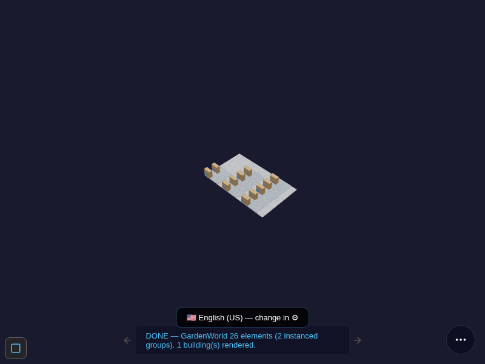
Controls (same as the BIM viewer): - Orbit — click-drag or one-finger drag - Zoom — scroll wheel or pinch - Pan — middle-drag or two-finger drag - Reset — double-tap / double-click
Warehouse Walk pill (inside the viewer)¶
The Walk pill (📦 bottom bar) appears only when the loaded db has locator-GUID bins — the §S-1
compile stamps both m_bom_line BIN rows and the element GUIDs with real m_locator_id values.
Any other building → the pill stays off the bar.
Walk flow:
- Open — tap the Walk pill. The engine builds a draft
M_Movementpick list from replenishment needs (qtyOnHandfold vsm_replenish.level_min). - Fly — the camera flies to the first bin; the target bin is highlighted bright blue; the rack group is shown as a solid overlay; all other geometry is ghosted (x-ray dim 0.1).
- Scan — tap Scan bin to:
- Use the device camera (
BarcodeDetector/getUserMedia) to scan the bin's QR label, or - Type the locator ID in the fallback field. Wrong bin is refused ("wrong bin, expected …"). Correct bin moves to the next step.
- Complete — after all bins the strip shows Walk complete ✓. A single signed
M_Movement COis committed throughKernelOps.commitGroup;qtyOnHandis folded from the op-log (no direct DB write).
Implementation status¶
| Step | Status | What |
|---|---|---|
| §S-1 ✅ | Compiled | Bins map to real m_locator_id; render gate green (61 KB db, GH Pages) |
| §S-2 ✅ | Route verb | wh_route.js sorts pick lines by spatial walk sequence (m_bom_line.ordinal) |
| §S-3 ✅ | Walk UI | Phone-first fly-to strip; depth model (ghost/rack/bin); step strip + camera easing |
| §S-4 ✅ | QR scan | BarcodeDetector + typed fallback; wrong-bin refusal gate |
| §S-5 ✅ | Signed op | M_Movement CO via KernelOps.commitGroup; on-hand folded from op-log |
| §S-2b ✅ LIVE | POS→pick loop | Sell deliver-later at the POS → the walk offers that open shipment → pick it to completion (on-hand moves at the pick). bim-ootb PR #283, W-WH-POS-PICK-LIVE. See §7 → Deliver later. |
Deliver later → pick at the warehouse (§S-2b)¶
The POS and the Warehouse Walk are one ledger, two lenses. When you ring a sale and choose
Deliver later · pick at warehouse (in the ⋯ dock — shown only when the tenant has a deliver-later
sale doctype, seed 132), the order completes (C_Order → CO) but the shipment is born DR (not
yet picked). As a demo convenience the Warehouse Walk opens in a new browser tab straight away
(§POS-DELIVERLATER walk-tab=opened) so you can pick immediately. That open shipment also appears as a
route source in the Warehouse Walk on any open: walk to the bin, scan/confirm, and the shipment
completes by the picked quantity — on-hand moves at the pick, not at the sale. Short-picks leave
the remainder open on the document. Once picked, the walk writes the completion back to the shared
ledger so the selector never re-offers a picked shipment. The whole loop is witnessed live end-to-end
(W-WH-POS-PICK-LIVE, PR #283). A "with-pick QA confirm" doctype (148) routes completion through the
warehouse-confirm gate first.
Share¶
Tap the ⌂ share route from the Warehouse pill action or the viewer share button to copy the short GH Pages URL for this walk session. The URL is self-contained — opening it on a phone immediately lands on the spatial model ready for the walk.
11. Clearing Cache / Resetting Demo Data¶
The app state lives in IndexedDB (key bim_erp_db, version 14). To reset to a clean demo:
Chrome / Edge / Firefox:
1. Open DevTools (F12) → Application (Chrome) or Storage (Firefox).
2. Find IndexedDB → bim_erp_db → right-click → Delete database.
3. Reload the page → the Install flow runs again from the bundled seed.
Quick reset via the browser console:
indexedDB.deleteDatabase('bim_erp_db');
location.reload();
Service Worker cache (if the app served a stale version):
DevTools → Application → Service Workers → Unregister
DevTools → Application → Cache Storage → Delete All
Then hard-reload (Ctrl+Shift+R). The sw version is bumped on every deploy so this is only
needed if you see an old CACHE_VERSION number in the console.
12. Pending Roadmap — known gaps and on-demand conditions¶
Data-gated (seed doesn't contain these yet)¶
| Gap | Condition | Fix |
|---|---|---|
Trial Balance shows 0 rows on default ad_seed.db |
fact_acct table not in seed (Postgres-only source) |
Load ?db=preview_demo.db or run prompts/MIGRATE_POSTING_CONFIG.md |
| Posting Preview empty | Same — acct linkage absent in default seed | Same fix |
| POS live ring to the cent | posting-config needed for the live ring | MIGRATE_POSTING_CONFIG.md |
| T_Aging / T_ReportStatement folds | 13 T_* temp-table folds not yet built |
Phase B §H-7..§H-11 (future) |
| Warehouse viewer: "Failed to fetch …oraclecloud…" on a bare open | OCI-era pwa_last_db resumed the retired bucket URL |
Fixed viewer sw v647 — self-heals to the landing (§PWA_RESUME_CLEAR); or clear site data once |
Engine-gated (code exists, not yet wired to live UI)¶
| Gap | Engine status | UI status |
|---|---|---|
AD_Callout derived fields on field-change |
✅ headless (W-CALLOUT-HARDEN) | Render-wiring parked |
AD_Val_Rule picklist filter |
✅ headless (W-VALRULE-HARDEN) | Render-wiring parked |
AD_Workflow node-walk |
🟡 ad_workflow.js built, no seed activity oracle |
Parked |
| Column-level / Record-level access | AD_Column_Access / AD_Record_Access empty in seed |
n/a |
| 454 SvrProcess handlers | 5 registered, 454 named-deferred | Honest absent-handler card shown |
stale fork: report_overlay.js in bim-ootb |
256 vs 908 lines in build/erp — lacks foldStatement/foldPrint | Needs sync + sw bump |
Coverage matrix summary (2026-06-12)¶
✅ 7 (live UI witnesses)
🟡 32 (headless-green, render-wiring pending)
⛔ 3 (n/a-in-seed: AD_Rule SQL + 2 empty *_Access)
The 🟡 ceiling means: every behaviourally interpretable surface that has seed data is exercised — the remaining work is wiring headless-proven engines into live DOM.
13. Pill Quick-Reference (cheat sheet)¶
Bottom bar
⌂ Home — AD menu tree
⊙ / ▣ Settings
🔍 (red) Record search / filter
🔴 (ring) Red pill — "just the pill" ⟷ classic iDempiere look (key ,)
🔌 Plugin Engine — Install (PackIn) / Create (PackOut) models
W History — world op-log scrubber
⋯ More: Install · Migrate · About · Tour · ShowMe
Inside a record form
▶ (Process) Run an AD_Process (parameter dialog if needed)
DocAction chips (Complete · Close · Void · …) — legal set only
Help
? Toggle ShowMe badges
Tap a badge Context card with tip + screenshot
‹ · › Step through ShowMe sequence
History (W pill)
Click a dot Jump to that op in the log
← / → Step back/forward one op
Long-press W Open Z+bomb drawer (undo / fold-back)
Long-press dot Enter Blue Future — speculative branch (§15)
Long-press blue dot Accept blue branch up to here · Tap blue dot Zoom children
14. Testing & Verification¶
Two pills in the bottom bar prove the system works. Show them during demos — they signal a serious, verifiable foundation, not a mock.
Verify Ledger (checkList icon)¶
Reads your live op-log from IndexedDB and walks the SHA-256 hash chain sealing every operation.
Opens a card showing one summary row: ✓ N ops — chain intact or ✗ Tamper at op N — <reason>.
Tap the pill again to dismiss. Hover tooltip: "Verify Ledger — hash-chain tamper check on your live op-log".
Use it after running real transactions (sales, document completions). On a fresh seed with 0 transactions it reports "0 ops" — that is correct, not a failure.
What it proves: nobody modified, deleted, or injected rows in the audit trail. Each op's hash depends on the previous one; any change breaks the chain at that exact point.
Doc Cycle Validator (check / tick icon)¶
Bootstraps a fresh in-memory SQLite database on the spot, runs 13 engine unit-tests, and shows a ✓ / ✗ row per check. The footer turns green "✓ 13 / 13 PASS — doc cycle proven in-browser" when all pass. Tap again to dismiss. Hover tooltip: "Doc Cycle — 13 engine tests (always green)".
Both testing pills share the same card chrome — same glass panel, same tick/cross row style.
Use it any time — it never touches your real data and needs no network. Always green; deterministic.
What it proves (the 13 checks):
| Section | Checks |
|---|---|
| FSM legal-action sets | DR/CO/VO each return the correct legal action list |
| Strict transitions | CO-from-Closed, PR-from-Completed, CO-from-Voided all throw DocStateError |
| Forward progression | PR advances DR → IP correctly |
| Atomic ERP + BIM sync | Completing a receipt writes both fact_acct (DR Inventory + CR AP) and bim_element_status under one SAVEPOINT |
| SAVEPOINT rollback | A document with no lines triggers rollback: 0 fact_acct rows, docstatus reverted to DR |
| Falsifier | CO → CO is rejected as DocStateError, not silently passed |
The distinction¶
| Verify Ledger | Doc Cycle | |
|---|---|---|
| Input | Your live op-log (real user transactions) | Fresh in-memory seed (no user data) |
| Tests | Data integrity — was anything tampered? | Engine correctness — does the logic work? |
| Always green? | Only after real transactions | Yes — same result every run |
15. Blue Future — the speculative branch (built-in pre-release test harness)¶
Blue Future is non-obvious the first time, so read this once. It lets you fork the live ledger into an unofficial speculative branch, run real operations inside it, then either accept them into the official books or discard them atomically — the official books never move until you accept. It is the app's built-in pre-release test harness: drive a client's whole lifecycle in blue, decide go / no-go, accept or discard before go-live.
Entering it — the gesture¶
- Tap the W pill to open the world-history overlay (the dot rail).
- Long-press an official (white) history dot. You enter BLUE.
The whole surface switches to an unmistakably unofficial skin so you can never confuse it with the real books:
- a blue rim on every window (including the GL canvas),
- an UNOFFICIAL banner across the top,
- and a print watermark — anything you print or export from blue is stamped UNOFFICIAL.
What you do inside blue — real, not a mock¶
Everything you'd do for real, and it is real — just on the speculative branch. CompleteIt a
document with its full fan-out (shipment · invoice · the GL postings), create records, run
processes. Each op is a signed op-log entry carrying a branch_id, so it lands on the blue branch
and never touches the official tip. The official chrome filters to branch_id IS NULL, so your
real books read exactly as before while blue is open (the read-site branch filter, sw v687, closed
the leak where blue rows could surface in official lists).
Closing the branch — accept or discard¶
| Gesture | Result |
|---|---|
| Long-press a blue dot | Accept up to here — the branch is rebased into the official books up to that point; what was speculative becomes the record |
| Long-press the white anchor dot (blue open) → confirm | Discard — the whole blue branch folds back atomically; the books never moved, so there is nothing to undo |
| Tap a blue dot | Zoom into its children (the fan-out that op produced) |
Why it is the test harness¶
Because blue runs the real engine — the same signed-commit fold, the same GL — a blue run is a faithful rehearsal, not a simulation. Take a freshly-migrated client through its entire first cycle (orders → ship → invoice → post → reports) in blue, read the consolidated result, then accept to go live or discard to try again. Nothing provisional ever reaches the official ledger.
Engine:
blue_future.js(window.BlueFuture) over the kernel op-logbranch_idlane. Witnessed live end-to-end — W-BLUE-FUTURE-LIVE (bim-ootb PR #317, erp sw v687); engine W-BLUE-FUTURE 9 / 9 headless.
For architecture details see ERP.md. For the coverage evidence see ERP_COVERAGE_MATRIX.md. For the migration story see MigrateComparisonPaper.md.